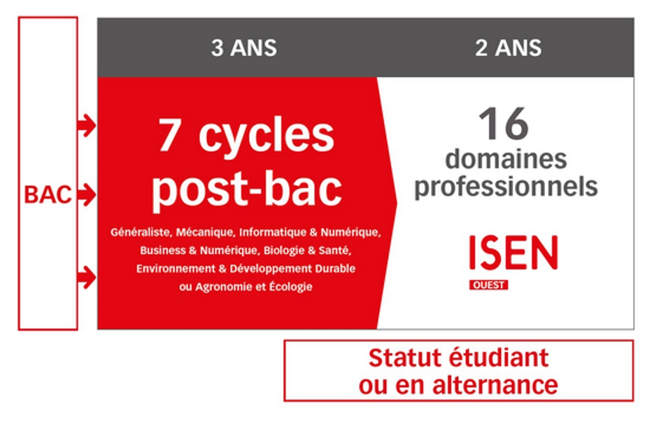

Chaque étudiant construit son propre parcours de formation sur 5 ans Au cours des trois premières années post-bac, les étudiants choisissent leur cursus parmi 7 cycles de formation différents. Au cours de ces 3 années, les élèves acquièrent une solide formation dans les sciences et les technologies numériques tout en approfondissant une spécialité dès la première année après le baccalauréat. Plusieurs passerelles sont possibles durant les 3 premières années si l’étudiant souhaite changer de cycle. Après la deuxième année, il est possible de choisir une poursuite d’études sous statut étudiant ou d’opter pour un contrat d’apprentissage. Au niveau Master 1, qu’il soit sous statut étudiant ou apprenti, chaque élève accède à un large choix de domaines professionnels sans concours ni critère de classement.
